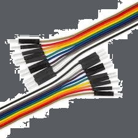

<title>Czujnik do kwiatka -- ZBUDOWANY NA ARDUINO UNO -- KAROL</title>
<link rel="stylesheet" href="pliki/styl.css">
<link rel="icon" href="obrazki/ikona.jpg" sizes="16x16" type="image/jpg">
<body background="obrazki/tlo.jpg"></body>
<div>
<center>
<h1>Cześć, witaj na mojej stronie. Dziś Tobie pokaże jak</h1>  
</center>  
<center>
<h1>zrobić czujnik do kwiata, który mierzy wilgotność</h1>  
</center>  
<center>
<h1>i sygnalizuje kiedy podlać kwiatek.</h1>  
</center>  
<center><h1>ㅤ</h1></center>
<div><center><h1>Do projektu użyłem części poniżej (klikaj w obrazki by wyszukać)</h1></center></div>
<a href="https://www.google.com/search?q=arduino+uno+r3+klon+do+kupienia">
<center></img></center>
<center><h2>ARDUINO UNO</h2></center>
</a>
<a href="https://www.google.com/search?q=tm1637+wyswietlacz+7-segmentowy+4+cyfry+do+kupienia">
<center></img></center>
<center><h2>WYŚWIETLACZ TM1637</h2></center>
</a>
<a href="https://www.google.com/search?q=kable+goldpin+żeńsko-męskie+20+sztuk">
<center></img></center>
<center><h2>KABLE GOLDPIN ŻEŃSKO-MĘSKIE (20szt.)</h2></center>
</a>
<a href="https://www.google.com/search?q=kable+goldpin+męsko-męskie+20+sztuk">
<center></img></center>
<center><h2>KABLE GOLDPIN MĘSKO-MĘSKIE (20szt.)</h2></center>
</a>
<a href="https://www.google.com/search?q=czujnik+wilgotności+gleby+do+arduino">
<center></img></center>
<center><h2>CZUJNIK WILGOTNOŚCI GLEBY</h2></center>
</a>
<center><h1>ㅤ</h1></center>
<a href="pliki/czujnik_do_kwiatow.stl">
<center></img></center>
<center><h2>PLIK STL DO DRUKU 3D (możesz przerwać druk by dostosować wysokość) (ja tak zrobiłem)</h2></center>
</a>
<center><h1>ㅤ</h1></center>
<a href="kod.html">
<center></img></center>
<center><h2>KOD</h2></center>
</a>
<a href="schemat.html">
<center></img></center>
<center><h2>SCHEMAT</h2></center>
</a>
<center><h1>ㅤ</h1></center>
<center><h1>FILM</h1></center>
<center><h1>↓↓↓↓↓↓↓↓↓↓↓↓↓↓↓↓</h1></center>
</div>
</a>
<a href="https://www.youtube.com/@karolm1111_official">
</center>
</a>
